정보통신기사(구) (2007-05-13 기출문제)
1과목: 디지털 전자회로
1. 주파수 변조방식의 설명으로 가장 거리가 먼 것은?
- 중간주파수 증폭단의 이득을 작게 해야 한다.
- 점유 주파수 대역폭이 진폭변조 보다 크다.
- 주파수편이를 크게하면 점유 주파수 대역폭이 커진다.
- FM방식이 AM 방식에 비하여 잡음이 비교적 적다.
(정답률: 알수없음)

2. 그림과 같은 ECL 회로의 논리출력은? (단, Y, Y'는 출력단자)
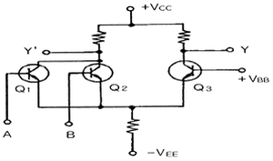
- Y : NAND Y' : AND
- Y : AND Y' : NAND
- Y : NOR Y' : OR
- Y : OR Y' : NOR
(정답률: 알수없음)
3. 그림과 같은 MOS 게이트의 기능을 나타내는 논리식은?
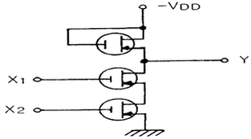
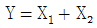
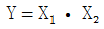
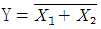
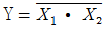
(정답률: 알수없음)
4. 다음 논리식을 간략화 하면?
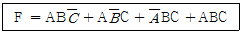
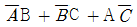
- AB + BC + CA
- AB + CA
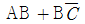
(정답률: 알수없음)
5. 논리회로를 구성하고자 할 때 IC에 내장되어 있는 AND, OR, NAND, NOR, NOT 등의 논리소자 중에서 선택적으로 퓨즈를 절단하는 방법으로 사용자가 직접 기록할 수 있는 PAL 또는 PLA와 같은 IC는 다음 중 어디에 속하는가?
- PLC
- PLD
- PLL
- RAM
(정답률: 알수없음)
6. 출력 4[V]를 얻는데 궤환이 없을 때는 0.2[V]의 입력이 필요하고, 부궤환이 있을 때는 2[V]의 입력이 필요하다고 한다. 궤환율 β는 얼마인가?
- 0.25
- 0.30
- 0.40
- 0.45
(정답률: 알수없음)
7. CR 발진기의 설명으로 가장 적합한 것은?
- 부성저항을 이용한 발진기이다.
- 압전기 효과를 이용한 발진기이다.
- R, L 및 C의 부궤환에 의하여 발진한다.
- C와 R의 정궤환에 의하여 발진한다.
(정답률: 알수없음)
8. 다음 회로의 용도로 옳은 것은?
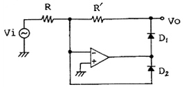
- 반파 정류기
- 전파 정류기
- Log 증폭기
- Anti-log 증폭기
(정답률: 알수없음)
9. 다음 중 푸시풀(push-pull) 증폭기의 설명으로 옳은 것은?
- A급으로 동작을 시키면 크로스 오버(cross over)왜곡이 증가한다.
- C급으로 동작시키면 출력도 크고 왜곡 매우 감소한다.
- 짝수 고조파가 소멸되므로 왜곡이 감소한다.
- B급으로 동작시키면 C급보다 효율이 크다.
(정답률: 알수없음)
10. FET와 TR의 차이점으로 틀린 것은?
- FET는 TR보다 입력저항이 크다.
- FET는 단극성 소자이고 TR은 쌍극성 소자이다.
- FET는 TR보다 잡음이 작다.
- FET는 전류소자이고 TR은 전압소자이다.
(정답률: 알수없음)
11. 수정진동자의 직렬공진 주파수와 병렬공진 주파수 사이의 임피던스는?
- 유도성
- 유도성 + 용량성
- 용량성
- 저항성 + 용량성
(정답률: 알수없음)
12. 다음의 연산 증폭회로에서 입•출력 관계가 옳은 것은?
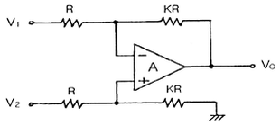
- V0 = K(V2 - V1)
- V0 = KV2 - (K ＋ 1)V1
- V0 = (K ＋ 1)V2 - KV1
- V0 = (K ＋ 1)(V2 - V1)
(정답률: 알수없음)
13. 다음 중 집적회로(IC)에서 고주파 특성을 제한하는 주요 요인은?
- 저항
- 다이오드
- 기생 커패시턴스
- 인덕턴스
(정답률: 알수없음)
14. 드레인 전압이 30V인 접합형 FET에서 게이트 전압을 0.5V 변화시켰더니 드레인 전류가 2mA 변화하였다. 이 FET의 상호컨덕턴스는 몇 mΩ인가?
- 0.1
- 1
- 4
- 6
(정답률: 알수없음)
15. 다음과 같은 회로에 구형파 입력 Vi를 인가 하였을 때 출력파형으로 가장 적합한 것은? (단, A는 이상적인 연산증폭기)
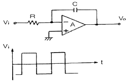
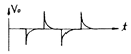
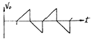
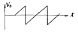
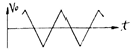
(정답률: 알수없음)
16. ECL(Emitter Coupled Logic) 회로를 TTL회로와 비교 설명한 것으로 가장 적합한 것은?
- 이미터 플로어이므로 안정된 동작을 한다.
- 스위칭 속도가 빠르다.
- 전력소모가 매우 적다.
- 단일전원 방식으로 공급전압이 높아야 한다.
(정답률: 알수없음)
17. 다음 중 아날로그 - 디지털 변환에 가장 유효하게 사용되는 코드는?
- BCD 코드
- 3초과 코드
- 그레이 코드
- 해밍 코드
(정답률: 알수없음)
18. 다음 그림의 카운터는?
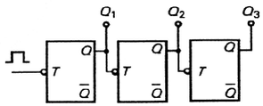
- 동기식 10진 카운터
- 비동기식 8진 카운터
- 동기식 5진 카운터
- 비동기식 3진 카운터
(정답률: 알수없음)
19. 구형파 펄스에서 펄스폭이 10[㎲], 펄스 반복주파수가 1[㎑]일 때, 그 평균 전력이 20[W]이었다면 이 펄스의 첨두전력은 얼마인가?
- 1[㎾]
- 2[㎾]
- 3[㎾]
- 4[㎾]
(정답률: 알수없음)
20. 다음 중 FM파의 복조용 회로로 적합하지 않은 것은?
- 경사형 검파기
- 포락선 검파기
- PLL 검파기
- 직교 검파기
(정답률: 알수없음)
2과목: 정보통신 시스템
21. 두 개의 호스트가 있다. 각 호스트의 (N+1)계층과 (N+1)계층 또는 각 호스트의 N 계층과 N 계층처럼 동일한 수평적 계층 사이에 주고받는 데이터 단위를 무엇이라 하는가?
- PDU
- SDU
- SAP
- PCI
(정답률: 알수없음)
22. 다음 중 패킷교환망에서 가입자의 데이터를 패킷화 하고 수신 패킷을 원래의 데이터로 복원시켜 주기 위한 기능을 수행하는 것은?
- DSU
- MODEM
- PAD
- CCU
(정답률: 알수없음)
23. 다음 중 회선에서 감쇠 및 위상 왜곡을 감소시키려면?
- 감쇠정수가 주파수에 관계없이 일정해야 한다.
- 특정임피던스가 주파수에 비례해야 한다.
- 위상정수가 주파수에 반비례해야 한다.
- 감쇠정수가 주파수에 반비례해야 한다.
(정답률: 알수없음)
24. 비동기전송모드(ATM)에서 사용하는 Cell의 길이는?
- 128bit
- 256bit
- 424bit
- 1024bit
(정답률: 알수없음)
25. 회선교환방식에 대한 설명 중 틀린 것은?
- 전송 중 항상 일정한 경로를 사용한다.
- 고정대역폭을 사용한다.
- 길이가 짧은 데이터 전송에 적합하다.
- 접속 후에는 전송을 위한 추가 데이터가 없다.
(정답률: 알수없음)
26. 정보통신의 에러제어에서 ARQ는 어느 방식인가?
- 패리티검사 코드방식
- 에러검출 후 재전송방식
- 전진에러 수정방식
- 루프 혹은 에코검사방식
(정답률: 알수없음)
27. IEEE 802.5 표준 방식에서 규정한 네트워크의 접속형태 및 액세스 방식으로 옳은 것은?
- CSMA/CD를 이용한 버스방식
- 토큰패싱을 이용한 버스방식
- 토큰패싱을 이용한 링방식
- CSMA/CD를 이용한 링방식
(정답률: 알수없음)
28. 다음 중 ATM에 관한 설명으로 틀린 것은?
- 비동기 전송모드이다.
- 전송매체로 광섬유케이블을 사용할 수 있다.
- 협대역 ISDN 교환기에 사용되는 교환방식이다.
- 고정 길이의 셀(cell)을 사용해서 전송한다.
(정답률: 알수없음)
29. 양방향으로 신호의 전송이 가능하나, 어느 순간에는 한쪽 방향으로만 전송이 이루어지는 통신방식은?
- 전이중통신(full-duplex transmission)
- 단향통신(one way transmission)
- 무선통신(radio telecommunication)
- 반이중통신(half-duplex transmission)
(정답률: 알수없음)
30. OSI 7계층 중 표현계층과 관계없는 것은?
- 코드변환
- 암호화
- FTAM
- 데이터 압축
(정답률: 알수없음)
31. 셀룰러 이동통신 시스템에서 통화 중에 이루어지는 핸드오프가 아닌 것은?
- 소프트(Soft) 핸드오프
- 소프터(Softer) 핸드오프
- 하드(Hard) 핸드오프
- 아이들(Idle) 핸드오프
(정답률: 알수없음)
32. HDLC의 FRAME 구성 중 플래그는 몇 bit로 구성되는가?
- 4
- 8
- 16
- 32
(정답률: 알수없음)
33. ITU-T에서 권고하고 있는 1.544[Mbps](T1)에는 몇 개의 통화채널을 수용할 수 있는가?
- 12CH
- 24CH
- 36CH
- 48CH
(정답률: 알수없음)
34. 다음 중 광대역 ISDN 서비스의 종류인 교신성 서비스에 속하지 않는 것은?
- 제어(Control) 서비스
- 대화형(Conversational) 서비스
- 메시지(Message) 서비스
- 검색(Retrieval) 서비스
(정답률: 알수없음)
35. 다음 중 대역확상 통신방식에 해당되지 않는 것은?
- Direct Sequence Spread Spectrum
- Frequency Hopping Spread Spectrum
- Time Hopping Spread Spectrum
- Frequency Multiplexing Spread Spectrum
(정답률: 알수없음)
36. 1[dB/km]의 손실을 갖는 전송선로 입력에 1[V]를 가하고 1000[km] 종단에서 1[V]의 출력 전압을 갖기 위해 전압이득이 100인 중계기를 사용하고자 한다. 이는 총 몇 대의 중계기가 필요한가?
- 25
- 50
- 100
- 150
(정답률: 알수없음)
37. 다음 중 네트워크의 호스트를 감시하고 유지 관리하는데 사용되는 TCP/IP 상의 프로토콜은?
- SNMP
- VT
- FTP
- SMTP
(정답률: 알수없음)
38. 호스트의 IP주소를 호스트와 연결된 네트워크 접속장치의 물리적 주소로 번역해주는 프로토콜은?
- RIP(Routing Information Protocol)
- OSPF(Open Shortest Path First)
- ARP(Address Resolution Protocol)
- ICMP(Internet Control Message Protocol)
(정답률: 알수없음)
39. 다음 중 주파수의 효율성을 위해 여러 채널의 주파수를 다수의 이용자가 공동으로 이용하는 통신방식은?
- PAGING
- CT-1
- TRS
- CT-2
(정답률: 알수없음)
40. QPSK 방식에서 데이터의 변조속도가 50[Baud]일 때, 전송 속도는 몇 [bps]인가?
- 25
- 50
- 100
- 200
(정답률: 알수없음)
3과목: 정보통신 기기
41. 다음 중 단순한 전송 기능 이상으로 정보의 축적, 가공, 변환 처리 등의 부가가치를 부여한 음성 또는 데이터 정보를 제공해 주는 복합적인 정보서비스망은?
- DSU
- VAN
- LAN
- MHS
(정답률: 알수없음)
42. 팩시밀리(facsimile)의 송신주사에서 기계적 주사가 아닌 것은?
- 원통주사
- 고체주사
- 원호면주사
- 평면주사
(정답률: 알수없음)
43. TV전파의 빈틈을 이용하여 뉴스, 일기, 교통정보 등의 문자와 도형신호를 TV 영상신호와 동시에 방송하여 수신자로 하여금 원하는 정보를 선택하여 TV화면으로 볼 수 있는 것은?
- 비디오텍스
- 텔레텍스트
- 텔레텍스
- 팩시밀리
(정답률: 알수없음)
44. 실제로 송신할 데이터가 있는 단말에게만 동적인 방식으로 각 부채널(Sub-Channel)에 Tine-Slot을 할당해 주는 다중화 방식은?
- PCM
- FDM
- Inverse Mux
- STDM
(정답률: 알수없음)
45. 디지털 서비스 유닛(DSU)에 대한 설명 중 틀린 것은?
- 모뎀에 비하여 구조적으로 복잡하고 매우 고가이다.
- 선로에 한쪽 극성만의 전압이 실리는 것을 방지한다.
- 정확한 동기유지가 가능하다.
- 단극성 신호를 쌍극성 신호로 변환시킨다.
(정답률: 알수없음)
46. 컴퓨터를 사용하여 정보를 검색하는 것으로 마이크로 필름에 들어 있는 정보의 검색에 이용하는 장치는?
- CAR
- CAD
- COM
- CAM
(정답률: 알수없음)
47. 위성통신에 사용되는 지구국의 안테나로 가장 널리 사용되는 것은?
- 대수주기 안테나
- O/H 안테나
- 카세그레인 안테나
- 패스랭스 안테나
(정답률: 알수없음)
48. CATV의 필요성에 대한 설명 중 틀린 것은?
- 지역정보망의 사회적 필요성 증대
- 교육 및 생활정보의 활용
- 난시청의 해소
- 기존 공중파 TV망의 확대 및 방송국의 통합
(정답률: 알수없음)
49. 모뎀을 분류하는 기본적인 요소에 해당되지 않는 것은?
- 통신속도
- 변조방식
- 동기방식
- 정합방식
(정답률: 알수없음)
50. 지구상공에서 700km ~ 1500km까지 유용하게 사용할 수 있고, 위성과 이동국(단말기)의 송신전력을 절감할 수 있으며, 또한 전파지연 시간이 적어 음성통신에 유리한 인공위성은?
- 저궤도 위성(LEO
- 중궤도 위성(MEO)
- 고궤도 위성(HEO)
- 정지궤도 위성(GEO)
(정답률: 알수없음)
51. 위성통신방식에 대한 설명으로 옳지 않은 것은?
- 다원 접속이 가능하고 통신가능 범위가 높다.
- 사용되는 주파수대는 주로 SHF대이다.
- 이동통신에 적합하고, 이용분야가 확대되고 있다.
- 지국국수신계에서 사용되는 저잡음 증폭기는 주로 클라이스트론이 사용된다
(정답률: 알수없음)
52. 다음 중 포트공동이용기가 위치할 곳은?
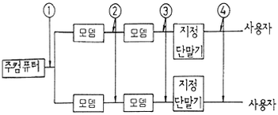
- ①
- ②
- ③
- ④
(정답률: 알수없음)
53. 다음 중 위성통신용 지구국에서 고출력 송신장치의 대전력 증폭기로 사용되는 것은?
- 진행파관
- FET증폭기
- 파라메트릭
- 푸시풀 증폭기
(정답률: 알수없음)
54. 검색형 AV(Audio Visual) 분류에서 상호 정보 교환을 취급 하는 것이 AVI 서비스 시스템이다. 다음 중 AVI 시스템이 취급하는 미디어 종류를 맞게 연결한 것은?
- 지각 대상 미디어 : 상호 교환 정보의 데이터 타입
- 축척 미디어 : 이용자가 알 수 있는 정보의 모습, 음악, 회화, Text 및 정지 화상 등
- 표현 미디어 : 데이터의 축척 수단 FD, HD, 광 디스크
- 전송 미디어 : 데이터 전달의 물리적 수단 2P 케이블, 동축케이블, 광 Fiber 등
(정답률: 알수없음)
55. 교환기의 가입자 회로에는 7종류(B, O, R, S, C, H, T)의 기능이 있는데 잘못 설명한 것은?
- B : 통화에 필요한 교류전류 220V를 가입자선에 공급한다.
- R : 가입자에게 착신을 알리기 위해서 호출신호를 가입자선에 송출하여 벨을 울린다.
- S : 가입자선에 흐르는 직류 전류 루프의 온/오프 상태를 감시함으로써 가입자 전화기의 상태를 검출한다.
- T : 가입자선을 시험 회로에 접속한다.
(정답률: 알수없음)
56. 다음 중 전화기의 기본 구성 회로(부품)가 아닌 것은?
- 통화회로
- 신호회로
- 등화회로
- HOOK 스위치
(정답률: 47%)
57. 전전자 교환기인 TDX-10에 대한 설명 중 틀린 것은?
- 제어방식이 분산제어 방식이다.
- 통화로 구조는 S-T-S 구조이다.
- 국내에서 개발한 교환기이다.
- 용도는 시내, 시외 및 중계용이다.
(정답률: 알수없음)
58. 비디오텍스의 구성장치에 해당하지 않는 것은?
- 입력장치
- 정보축척장치
- 통신처리장치
- 트랜스폰더
(정답률: 40%)
59. 다음 중 시분할 다중화기의 특징이 잘못된 것은?
- 동기식 전송만 이용 가능하다.
- 정확한 시간 동기가 필수적이다.
- 비트 삽입식과 문자 삽입식이 있다.
- Point to Point 시스템에서 이용될 수 있다.
(정답률: 알수없음)
60. 다음 중 단말기의 입•출력 기능에 해당되는 것은?
- 회선제어기능
- 오류제어기능
- 출력변환기능
- 전송제어기능
(정답률: 알수없음)
4과목: 정보전송 공학
61. 비트방식 프로토콜(bit-oriented protocol)이 아닌 것은?
- LAPB
- HDLC
- LLC
- DDCMP
(정답률: 알수없음)
62. 과부하 잡음이 없는 경우 8비트 양자화시 신호 전력대 잡음 전력의 비(S/Nq)는 6비트 양자화에 비해 어떻게 변화되는가?
- 3dB 증가
- 6dB 증가
- 9dB 증가
- 12dB 증가
(정답률: 알수없음)
63. 다음 디지털 변조방식 중에서 대역폭 효율이 가장 높은 것은?
- 2진 ASK
- 2진 FSK
- 2진 PSK
- 4진 PSK
(정답률: 50%)
64. 동일 전송속도에서 16진 PSK의 전송 대역폭은 4진 PSK 전송 대역폭과 비교하면 어떻게 되는가?
- 4진 PSK 전송 대역폭의 2배
- 4진 PSK 전송 대역폭의 4배
- 4진 PSK 전송 대역폭의 1/2
- 4진 PSK 전송 대역폭의 1/4
(정답률: 알수없음)
65. 피기백응답(piggyback acknowledgement)에 대한 설명으로 가장 적합한 것은?
- 송신측이 일정한 시간안에 수신측으로부터 ACK가 도착하지 않으면 에러로 간주하는 것이다.
- 송신측이 타임-아웃시간을 설정하기 위한 목적으로 내보낸 테스트 프레임에 대한 응답이다.
- 수신측이 에러를 검출한 후 재전송해야 할 프레임의 개수를 송신측에게 알려주는 응답이다.
- 수신측이 별도의 ACK를 보내지 않고 상대편으로 향하는 데이터 전문을 이용하여 응답하는 것이다.
(정답률: 알수없음)
66. 위성 통신에서 위성을 효과적으로 운영하기 위한 다원 접속 방법이 아닌 것은?
- TDMA(시분할 다중 액세스)
- FDMA(주파수분할 다중 액세스)
- CDMA(코드분할 다중 액세스)
- WDMA(파장분할 다중 액세스)
(정답률: 알수없음)
67. 다음 중 유럽 PCM 방식 1계위의 전송속도로 적합한 것은?
- 64[Kbps]
- 1.544[Mbps]
- 2.048[Mbps]
- 6.312[Mbps]
(정답률: 알수없음)
68. 베이스밴드 전송방식으로 신호를 그림과 같이 부호화하는 방식은?
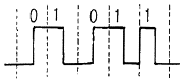
- 단극 RZ
- 양극 NRZ
- Differential 코드
- Manchester 코드
(정답률: 알수없음)
69. 주파수 대역폭이 d [Hz]이고 통신로와 채널용량이 4d [bps]인 통신로에서 필요한 신호대 잡음비는?
- 5
- 10
- 15
- 20
(정답률: 알수없음)
70. 정합필터(Matched filter)에 대한 설명으로 틀린 것은?
- 하나의 곱셈기와 하나의 적분기로 구현할 수 있다.
- t = T 일 때의 정합필터를 상관기(correlator)라 한다.
- 정합필터는 본질적으로 비동기 검파기이다.
- 사용하는 목적은 신호성분을 증가시키고, 동시에 잡음을 감소시키는데 있다
(정답률: 알수없음)
71. HDLC 프로토콜에 대한 설명으로 옳지 않은 것은?
- 비트방식(Bit Orented)의 프로토콜이다.
- 프레임의 시작과 끝에는 플래그가 위치 한다.
- 주소영역이 모두 '1'인 경우는 모든 스테이션에 프레임을 전달하기 위한 것으로 사용된다.
- Full Duplex 방식에서는 사용할 수 없다.
(정답률: 알수없음)
72. 어느 특정시간 동안 1000000개의 비트가 전송되고 이 비트 중 2개가 오류로 판명되었을 때 이 전송의 비트 에러율은 얼마인가?
- 1×10-5
- 2×10-5
- 1×10-5
- 2×10-6
(정답률: 47%)
73. 광케이블에서 단일모드가 되기 위한 조건을 나타내는 광학 파라미터는?
- 수광각
- 개구수(NA)
- 비굴절률차
- 규격화 주파수
(정답률: 알수없음)
74. 다음 중 BCH 에러정정 코드에 대한 설명으로 옳은 것은? ( 단, n 비트 부호어에서 2m-1 ≦ n )
- 종류에는 위너부호, 비터비 등이 있다.
- Convolution 부호방식 중의 하나이다.
- Hamming 부호와는 달리 1개의 에러만을 정정할 수 있다.
- t 개의 에러정정을 위하여는 mt개의 검사 비트를 부가하여야 가능하다.
(정답률: 알수없음)
75. 다음 중 HDLC에서 프레임 체크 시퀀스로 가장 적합한 부호는?
- CRC
- Hamming
- Grey
- ASCII
(정답률: 알수없음)
76. 다음 중 광섬유내에 포함되는 불순물 이온에 의해 생기는 광손실은?
- 산란손실
- 마이크로 밴딩손실
- 흡수손실
- 구조 불완전 손실
(정답률: 알수없음)
77. 이동통신 채널에서 일어나는 현상이 아닌 것은?
- 도플러 효과
- 채널 간섭 현상
- 페이딩 현상
- 전리층 반사 현상
(정답률: 알수없음)
78. 시분할 다중화장치에 대한 설명으로 옳지 않은 것은?
- 동기식 시분할 방식과 통계적 시분할 방식이 있다.
- 동기식 시분할 방식에서는 전송프레임마다 각 시간 슬롯이 해당 채널에게 고정적으로 할당된다.
- 통계적 시분할 방식에서는 추가적인 주소 정보가 각 시간 슬롯마다 필요하다.
- 데이터 전송이 간헐적으로 일어나는 컴퓨터 통신에서는 동기식 시분할 방식이 통계적 시분할 방식보다 효율성 측면에서 유리하다.
(정답률: 알수없음)
79. 비트의 투명성을 유지하기 위해서 플래그와 동일한 비트 형태가 나타나면 0 을 삽입하여 방지하는 기술을 무엇이라 하는가?
- Global insertion
- Flag insertion
- Zero insertion
- Source insertion
(정답률: 알수없음)
80. 트위스트 페어(twisted pair) 케이블과 비교한 동축케이블의 특징이 아닌 것은?
- 장거리와 광대역 전송에 적합하다.
- 높은 데이터 전송률을 가진다.
- 고주파에서 누화 특성이 나쁘다.
- 임피던스 불균등 점이 있으면 반사현상이 일어나고, 반사와 재반사가 되풀이 되어 고스트를 야기 시킨다.
(정답률: 알수없음)
5과목: 전자계산기일반 및 정보통신설비기준
81. 자바(java) 언어의 특징으로 옳지 않은 것은?
- 객체지향언어의 장점을 가지고 있다.
- 컴파일러 언어이다.
- 분산 환경에 알맞은 네트워크 언어이다.
- 플랫폼에 무관한 이식이 가능한 언어이다.
(정답률: 알수없음)
82. 수의 자료 표현에서 정수와 실수의 표현 중 바르게 짝지어 진 것은?
- 정수의 표현 - 부동 소수점 형식
- 실수의 표현 - Zone Decimal 형식
- 정수의 표현 - 1의 보수 방식
- 실수의 표현 - 부호와 절대치 방식
(정답률: 알수없음)
83. CPU 레지스터, 캐시기억장치, 주기억장치, 보조기억장치로 기억장치의 계층구조 요소를 구성하고 있다. 이들 중에서 처리속도가 가장 빠른 것과 가장 느린 것을 순서대로 옳게 나열한 것은?
- 캐쉬기억장치, 주기억장치
- CPU 레지스터, 캐쉬기억장치
- 주기억장치, 보조기억장치
- CPU 레지스터, 보조기억장치
(정답률: 알수없음)
84. 다음 중 종류가 다른 연산은?
- AND
- ADD
- OR
- NOT
(정답률: 알수없음)
85. 다음 중 집적회로와 가장 관계가 깊은 것은?
- 외부와의 연결회로가 복잡하고 비경제적이다.
- 제작한 시스템의 크기가 작아진다.
- 수명이 짧고, 고장률이 높아 신뢰성이 낮다
- 동작 속도는 빠르지만 전력 소비가 많다.
(정답률: 알수없음)
86. 컴퓨터의 중앙처리장치내의 제어장치를 구성하는 요소가 아닌 것은?
- 제어 신호 발생기
- 명령 레지스터
- 명령 계수기
- 누산기
(정답률: 알수없음)
87. 다음 중 메모리 셀의 주소에 의해서가 아니라 기억된 내용에 의해서 액세스(access)하는 기억장치는?
- 캐시메모리(cache memory)
- 연관메모리(associative memory)
- 세그먼트메모리(segment memory)
- 가상메모리(virtual memory)
(정답률: 알수없음)
88. 다음 중 10진수 0.834를 8진수로 변환한 결과와 가장 가까운 것은?
- (0.653)8
- (0.764)8
- (0.631)8
- (0.521)8
(정답률: 알수없음)
89. 채널(channel)은 어느 곳에 위치해 있는가?
- 연산장치와 레지스터 중간
- 주기억장치와 보조기억장치의 양쪽
- 주기억장치와 중앙처리장치의 중간
- 주기억장치와 입•출력장치의 사이
(정답률: 알수없음)
90. 다음 중 주소지정방식에 대한 설명으로 틀린 것은?
- 직접주소지정방식에서 오퍼랜드는 실제 주소 값이다.
- 간접주소지정방식은 최소 두 번 메모리에 접속해야 실제 데이터를 가져온다
- 즉시주소지정방식에서 오퍼랜드는 실제 데이터 값이다.
- 레지스터주소지정방식은 프로그램카운터(PC)와 관련이 있다.
(정답률: 알수없음)
91. 전기통신사업의 공정한 경쟁환경의 조성 및 전기통신역무 이용자의 권익보호에 관한 사항을 심의ㆍ의결하고, 전기통신사업자간 또는 전기통신사업자와 이용자간 분쟁의 재정을 하기 위하여 정보통신부에 둔 기구는?
- 정보화추진위원회
- 통신위원회
- 한국정보보호위원회
- 윤리위원회
(정답률: 알수없음)
92. 정보통신공사를 설계한 용역업자는 그가 작성 또는 제공한 실시설계도서를 당해 공사가 준공된 후 몇 년간 보관하여야 하는가?
- 3
- 5
- 7
- 10
(정답률: 알수없음)
93. 다음 중 정보통신공사업법에 의한 감리원의 업무범위가 아닌 것은?
- 공사계획 및 공정표의 검토
- 공사업자가 작성한 시공 상세도면의 검토ㆍ확인
- 설계변경에 관한 사항의 검토ㆍ확인
- 공사 관련 인원의 지휘, 통솔
(정답률: 알수없음)
94. 다음 중 정보통신공사업의 등록을 할 수 있는 자는?
- 금치산자 및 한정치산자
- 파산선고를 받고 복권되지 아니한 자
- 정보통신공사업법의 규정에 의하여 벌금형의 선고를 받고 2년을 경과하지 않은 자
- 정보통신공사업법의 규정에 의하여 등록이 취소된 후 3년이 경과한 자
(정답률: 알수없음)
95. 다음 중 정보통신설비와 이에 연결되는 다른 정보통신설비 또는 이용자설비와의 사이에 정보의 상호전달을 위하여 사용하는 통신규약을 인터넷, 언론매체 또는 그 밖의 홍보매체를 활용하여 공개하여야 하는 자는?
- 기간통신사업자
- 한국정보통신기술협회장
- 관할 체신청장
- 정보통신부장관
(정답률: 알수없음)
96. 다음 중 정보통신공사업자만이 시공할 수 있는 공사는?
- 실험국의 무선설비 설치공사
- 건축물에 설치되는 5회선 이하의 구내통신선로 설비공사
- 연면적 1천제곱미터 이하의 건축물의 자가유선방송 설비ㆍ구내방송설비 및 폐쇄회로텔레비전의 설비공사
- 라우터 및 허브의 증설이 수반되는 10회선의 근거리 통신망(LAN) 선로의 증설공사
(정답률: 알수없음)
97. 정보통신부장관이 필요한 경우에 통신기자재 생산업자 또는 정보통신공사업자에게 행하는 기술지도의 내용이 아닌 것은?
- 전기통신기자재 기술표준의 적용에 관한 사항
- 새로운 전기통신방식의 채택ㆍ응용ㆍ개발에 관한 사항
- 전기통신설비의 설치에 적용하는 표준공법에 관한 사항
- 전기통신의 질서 유지에 관한 사항
(정답률: 알수없음)
98. 유선·무선·광선 기타 전자적 방식에 의하여 부호·문자·음향 또는 영상 등의 정보를 저장·제어·처리하거나 송·수신하기 위한 기계·기구·선로 기타 필요한 설비를 말하는 것은?
- 전송설비
- 교환설비
- 정보통신망
- 정보통신설비
(정답률: 알수없음)
99. 정보통신부장관이 전기통신의 원활한 발전과 정보사회의 촉진을 위하여 전기통신기본계획을 수립하고자 할 때 미리 관계 행정기관의 장과 협의하여야 할 사항은?
- 전기통신사업에 관한 사항
- 전기통신의 질서유지에 관한 사항
- 전기통신설비에 관한 사항
- 전기통신의 이용 효율화에 관한 사항
(정답률: 알수없음)
100. 다음 ( ) 안에 들어갈 내용으로 가장 적합한 것은?
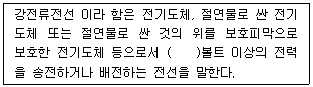
- 220
- 300
- 600
- 750
(정답률: 알수없음)